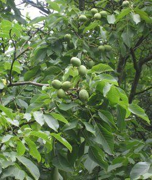
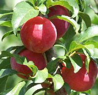
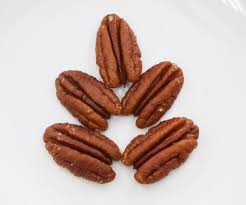

Tên khác:
Tên thường gọi: Hồ đào, Óc chó
Tên tiếng trung: 胡 桃
Tên khoa học: Juglans regia L.
Họ khoa học: Thuộc họ Hồ đào - Juglandaceae.
Cây hồ đào:
( Mô tả, hình ảnh, thu hái, chế biến, thành phần hoá học, tác dụng dược lý ....)
Mô tả:

Cây to, có thể cao tới 30m; vỏ nhẵn và màu tro. Lá dài tới 40cm, kép lông chim lẻ với 5-9 lá chét hình trái xoan nguyên, dài 6-15cm, rộng 3-6, có gân giữa lồi ở mặt dưới. Hoa đơn tính, màu lục nhạt; hoa đực xếp thành đuôi sóc thõng xuống; hoa cái xếp 2-5 cái ở cuối các nhánh. Quả hạch to có vỏ ngoài màu lục và nạc, dễ hoá đen khi chà xát, vỏ quả trong hay vỏ của hạch rất cứng, có 2 van bao lấy hạt với 2 lá mầm to, chia thuỳ và nhăn nheo như nếp của óc động vật.Hoa tháng 5, quả tháng 9-10.
Phân bố:
Cây có nguồn gốc ở Á, Tiểu Á và thuần hoá từ lâu ở các vùng ôn đới ở Âu châu. Ở nước ta cũng có trồng ở Lao Cai (Sapa), Hà Giang (Phó Bảng, Đồng Văn) và Cao Bằng.
Thu hái:
Có thể thu hái lá quanh năm, còn quả thu hái vào tháng 9-10, đập vỏ hạch lấy nhân.
Bộ phận dùng:

Hạt - Semen Juglandis, thường gọi là Hồ đào nhân. Người ta cũng dùng lá.
Lá = Hồ đào diệp
Vỏ quả = Hồ đào xác = Thanh long y
Hạt còn vỏ cứng = Hạch đào
Màng mềm giữa vỏ và nhân hạt = Phân tâm mộc
Nhân hạt = Hồ đào nhân = Hạnh đào nhân.

Thành phần hóa học:Lá Hồ đào -Thành phần: tannin, acid ellagic, juglon (naphtoquinol), juglanin và tinh dầu.
Hồ đào nhân có nước 17,59%, protid 11,05%, lipid 41,98%, chất dẫn xuất 26,50%, cellulose 1,30%, tro 1,60%. Nhân hạt chứa dầu mau khô gồm phần lớn là các glycerid của acid linoleic và linolenic. Hạch rất giàu hydroxy-5-tryptamin. Nó cũng giàu đồng và kẽm; còn có K, Mg,S, Fe, Ca và các vitaminA, B, C, P. Dầu hạt óc chó có mùi đặc biệt dễ chịu nhưng dễ bị hôi.
Hồ đào nhân.-Xin đừng nhầm với Đào nhân (Prunus persica) hoặc Hạnh đào, tính chất trị liệu hoàn toàn khác.
-100g Hồ đào nhân sinh 642 calori, có 14g protein, 62g chất béo. Nếu tính ra calori, 8% do chất béo bão hoà, 55% do chất béo chưa no nhiều nối đôi, 20% do chất béo một nối đôi. Như vậy chất béo cuả Hồ đào nhân tương đối tốt, gần bằng dầu hướng dương.
-Hồ đào nhân có juglone và juglanin.
Tác dụng dược lý:
Triết xuất lá cây có tác dụng có tác dụng diệt khuẩn mạnh trên vi khuẩn Vibrio cholerae, Bacillus subtilis, Streptococcus pneumoniae, Streptococcus, Staphylococcus aureus và Escherichia coli, Salmonella typhi.
Trong ống nghiệm, 1: 100 nồng độ truyền lá có thể tiêu diệt Leptospira.
Hợp chất polyphenol trong lá cây có tác dụng chống viêm tốt, các flavonoid có thể làm giảm huyết áp ở chó. Tannin và naphtoquinol trong lá có tính kháng khuẩn. Acid ellagic có tính chống oxy-hoá yếu.
Vỏ quả có khả năng chống khối u. (Huang KC. The Pharmacol of Chin herbs 1999) Mới có kết quả trong phòng thí nghiệm, chưa ứng dụng lâm sàng.
Vị thuốc hồ đào nhục - óc chó
( Công dụng, Tính vị, quy kinh, liều dùng .... )
Tính vị:

Nhân hạt óc chó có vị ngọt, tính ấm;Quy kinh:
Vào kinh Thận, Phế, Đại trường.
Liều dùng: 10-16g
Công dụng:
Bổ khí, dưỡng huyết, nhuận táo, ôn phế, hóa đờm, định suyễn, ích mệnh môn, lợi tam tiêu.
Lá hồ đào sắc uống làm thuốc bổ, lọc máu; dùng nhiều có tính sáp trường (trị tiêu chảy). Ngậm trong miệng để trị lở miệng, hôi miệng. Vôi ngoài da trị mụn nhọt, rưả vết thương, rửa âm đạo do tính kháng khuẩn và kháng nấm. Phụ nữ cho con bú tránh dùng (vì tắt sữa).
Kiêng kỵ
Không dùng trong các trường hợp âm hư hỏa vượng, ho do đàm nhiệt hoặc tiêu chảy.
Ứng dụng lâm sàng của Hồ đào
Hồ đào có tác dụng làm mạnh sức, béo người, đen tóc, trơn da. Ở Trung Quốc, nó được xem như có tác dụng ôn bổ phế thận, định suyễn nhuận tràng. Người ta cho là nhân hạt rất bổ dưỡng vì có nhiều protid, có thể chống tràng nhạc, nhuận tràng, trị ỉa chảy, trị giun, dẫn lưu hệ da và bạch huyết.
Công dụng, chỉ định và phối hợp:
Thường dùng chữa tiết tinh, ho lâu, gối lưng đau mỏi, ngày dùng 4-12g, phối hợp với các vị thuốc khác.
Ở Trung quốc, hạt Hồ đào dùng chữa thận hư Đau lưng, hư hàn ho suyễn, đại tiện khó khăn, đau chân tay.
Ở Âu châu, hạt dùng trị đái đường, ỉa chảy, tràng nhạc, bệnh ngoài da, lao phổi, đái dầm, ký sinh đường ruột. Lá tươi dùng làm thuốc đặc hiệu chữa bệnh thuộc tạng lao, tràng nhạc, các bệnh về da như chốc lở, ghẻ ngứa, phát ban da (dùng dưới dạng nước sắc uống hay nấu nước tắm). Nó cũng có tính giảm áp lực và giảm glucose - huyết nhẹ.
Đơn thuốc:
1. Chữa thận lạnh, đau buốt ngang lưng, rũ mỏi, liệt dương, đái són, đái luôn vãi đái, tiết tinh: Hạt óc chó 12g, Ba kích 10g, Nhân quả Ré (Ích trí nhân), Ô dược, Cẩu tích đều 8g, sắc uống.
2. Chữa bị thương đau nhức: Dùng hạt óc chó giã nhỏ hoà với rượu uống, và giã lá tươi hay vỏ quả đắp rịt ngoài.
3. Chữa người già hen suyễn và người đái ra cát sỏi: Giã hạt óc chó nấu cháo thường ăn.
Một số bài thuốc có Hồ đào nhục :
Tam Kim Hồ Đào Thang (Thiên Gia Diệu Phương, Q. Thượng)
Nội kim hồ đào cao (Thiên Gia Diệu Phương, Q. Thượng)
có tác dụng Tư thận, thanh nhiệt, thấm thấp, lợi niệu, thông lâm, hóa kết. Trị nước tiểu ngưng kết thành sỏi.
Nhân Sâm Hồ Đào Thang (Tế Sinh Phương) Trị Phế Thận đều hư, suyễn.
Tham khảo:
Ddinh dưỡng Quả hồ đào
Chất chống ôxy hóa có trong nhân quả hồ đào có lợi cho sức khỏe tim mạch; ngăn ngừa một số bệnh. Đây là công bố của các nhà nghiên cứu tại Đại học Loma Linda (Mỹ).
Quả hồ đào có chứa hợp chất chống ôxy hóa vitamin E (tocopherol) và các hợp chất phenolic giúp chống ôxy hóa. Nhân của quả hồ đào giàu gama – tocopherol, một dạng của vitamin E.
Nghiên cứu đã chỉ ra, sau khi ăn quả hồ đào, lượng gama – tocopherol trong cơ thể tăng gấp đôi còn lượng LDL – cholesterol ôxy hóa có hại trong máu giảm tới 33%. LDL – cholesterol có thể góp phần gây ra các chứng viêm sưng bên trong thành động mạch và làm tăng nguy cơ các vấn đề về tim mạch.
Theo tiến sĩ Haddad, những phát hiện này có được từ một đề tài nghiên cứu nhằm mục đích đánh giá những tác dụng có lợi đối với sức khỏe của quả hồ đào. Bà đã phân tích biểu hiện sinh học trong mẫu máu và nước tiểu của 16 người trong độ tuổi từ 23 đến 44. Họ được ăn lần lượt ba chế độ ăn. Chế độ ăn 1 gồm toàn bộ nhân quả hồ đào, chế độ ăn 2 gồm nhân quả hồ đào pha với nước và chế độ ăn 3 là chế độ ăn so sánh với hai chế độ ăn trên. Các chế độ ăn 1 và 2 có khoảng 28g nhân quả hồ đào. Các mẫu máu và nước tiểu được lấy ngay trước bữa ăn và các thời điểm khác nhau. Kết quả phân tích cho thấy, với cả hai chế độ có quả hồ đào, lượng gama – tocopherol trong cơ thể tăng gấp đôi tại thời điểm 8h sau khi ăn và khả năng hấp thụ các gốc ôxy hóa tự do (một thông số để đo khả năng chống ôxy hóa trong máu) lần lượt tăng 12% và 10% tại thời điểm 2h sau khi ăn. Ngoài ra, khi theo dõi chế độ ăn 1 thì lượng LDL – cholesterol ôxy hóa giảm 30% vào thời điểm 2h, 33% vào 3h và 26% vào 8h sau khi ăn.
“Nghiên cứu này, một lần nữa minh chứng cho quả hồ đào là một thực phẩm tốt cho sức khỏe”; TS. Haddad nói thêm; “ Những nghiên cứu trước đây cho thấy quả hồ đào có chứa các thành phần chống ôxy hóa. Trong nghiên cứu này, chúng tôi đã chỉ ra rằng, các chất chống ôxy hóa có trong quả hồ đào đã thực sự được hấp thụ vào cơ thể và đem lại các tác động mang tính bảo vệ trong việc chống lại một số loại bệnh, trong đó có ung thư và bệnh tim mạch
Chè Hồ đào
Thành phần: Hồ đào nhân, Hạnh nhân, gừng, mật ong. Trị ho, ho sặc, ho từng cơn, đàm loãng. Giải phương như sau:
· Hồ đào nhân ôn phế thận.
· Hạnh nhân thông phế, tiêu đờm.
· Gừng hành khí hoạt huyết, tiêu đờm.
· Mật ong và đường hiệp đồng với Hồ đào nhân bổ tỳ
-Ích Tam tiêu nên tiêu đờm, thông tiểu.
-Bổ can tỳ nên có tính cách bổ dưỡng.
Chè Hồ đào + Câu kỷ + hạt sen, củ sen, đại táo.
Chè này bổ thận sáp tinh, chống di hoạt tinh.
Nơi mua bán vị thuốc ten1 đạt chất lượng ở đâu?
Trước thực trạng thuốc đông dược kém chất lượng, nguồn gốc không rõ ràng,... xuất hiện tràn lan trên thị trường, làm ảnh hưởng tới hiệu quả điều trị cũng như ảnh hưởng tới sức khỏe của bệnh nhân. Việc lựa chọn những địa chỉ uy tín để mua thuốc đông dược là rất quan trọng và cần thiết. Vậy khách hàng có thể mua vị thuốc ten1 ở đâu?
ten1 là vị thuốc nam quý, được sử dụng rộng rãi trong YHCT. Hiện tại hầu hết các cửa hàng thuốc đông dược, phòng khám đông y, phòng chẩn trị YHCT... đều có bán vị thuốc này. Tuy nhiên người mua nên chọn những địa chỉ có uy tín, đảm bảo chất lượng, có giấy phép hoạt động để mua được vị thuốc đạt chất lượng.
Với mong muốn bệnh nhân được sử dụng những loại dược liệu đúng, chất lượng tốt, phòng khám Đông y Nguyễn Hữu Toàn không chỉ là đia chỉ khám chữa bệnh tin cậy, uy tín chất lượng mà còn cung cấp cho khách hàng những vị thuốc đông y (thuốc nam, thuốc bắc) đúng, chuẩn, đạt chuẩn chất lượng. Các vị thuốc có trong tiêu chuẩn Dược điển Việt Nam đều được nghành y tế kiểm nghiệm đạt chất lượng tiêu chuẩn.
Vị thuốc ten1 được bán tại Phòng khám là thuốc đã được bào chế theo Tiêu chuẩn NHT.
Giá bán vị thuốc ten1 tại Phòng khám Đông y Nguyễn Hữu Toàn: 700.000vnd/1kg
Tùy theo thời điểm giá bán có thể thay đổi.
+ Khách hàng có thể mua trực tiếp tại địa chỉ phòng khám: Cơ sở 1: Số 481 lô 22 Lê Hồng Phong, Phường Gia Viên, Thành phố Hải Phòng
+ Mua trực tuyến: Thuốc được chuyển qua đường bưu điện. Khi nhận được thuốc khách hàng thanh toán tiền COD.
Tag: cay ten2, vi thuoc ten2, cong dung ten2, Hinh anh cay ten2, Tac dung ten2, Thuoc nam
Thaythuoccuaban.com Tổng hợp
*************************